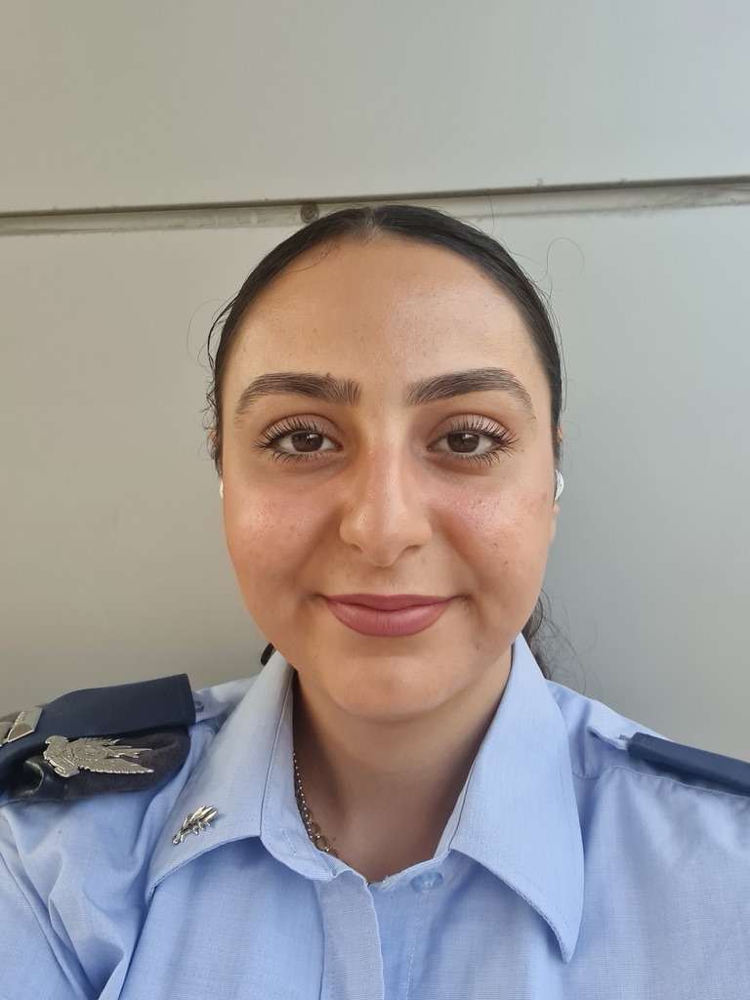

Hi, I'm Coral Tzubery, a 27-year-old with a warrior's spirit. I'm determined, resilient, and never back down in the face of challenges. This site offers a glimpse into my journey and what keeps me going.
"Resilient, fearless, and ready to conquer any challenge."
No matter how tough the journey, every challenge is a step closer to my goals. Never give up.
Here's a song that always accompanies me and perfectly sums up my journey: Listen to the song that motivates me.
I was born and raised in Arad, a place that shaped my resilience and grounded me in my roots. A couple of years ago, I moved to Bat Yam with my partner to start a new chapter and embrace new opportunities.
I see myself as a true warrior. For me, being a warrior isn't about combat—it's about determination, perseverance, and never giving up, even when things get challenging. Through each stage in life, I’ve learned the importance of pushing through obstacles to achieve my goals, and I carry that mindset with me every day.
Over the past four years, I've been serving as a project manager in the Air Force, where I lead, organize, and execute high-stakes projects. My background in Electrical and Electronics Engineering, which I studied at Tel Aviv University, gave me a strong technical foundation and a structured approach to problem-solving. This knowledge has been invaluable in my role, where I bring ideas to life and ensure they succeed through every challenge.
From as far back as I can remember, I’ve always loved learning new things. I enjoy exploring diverse fields—like language studies, where I’m currently learning Japanese and have previously tried Spanish and French. I’ve also ventured into music, learned to play different instruments, and experimented with various sports, from weightlifting at the gym to swimming, ballroom dancing, and tennis. I strive to excel in everything I undertake, a value I learned from my parents, who have always supported my choices and taught me to love learning, improving, and expanding my horizons.